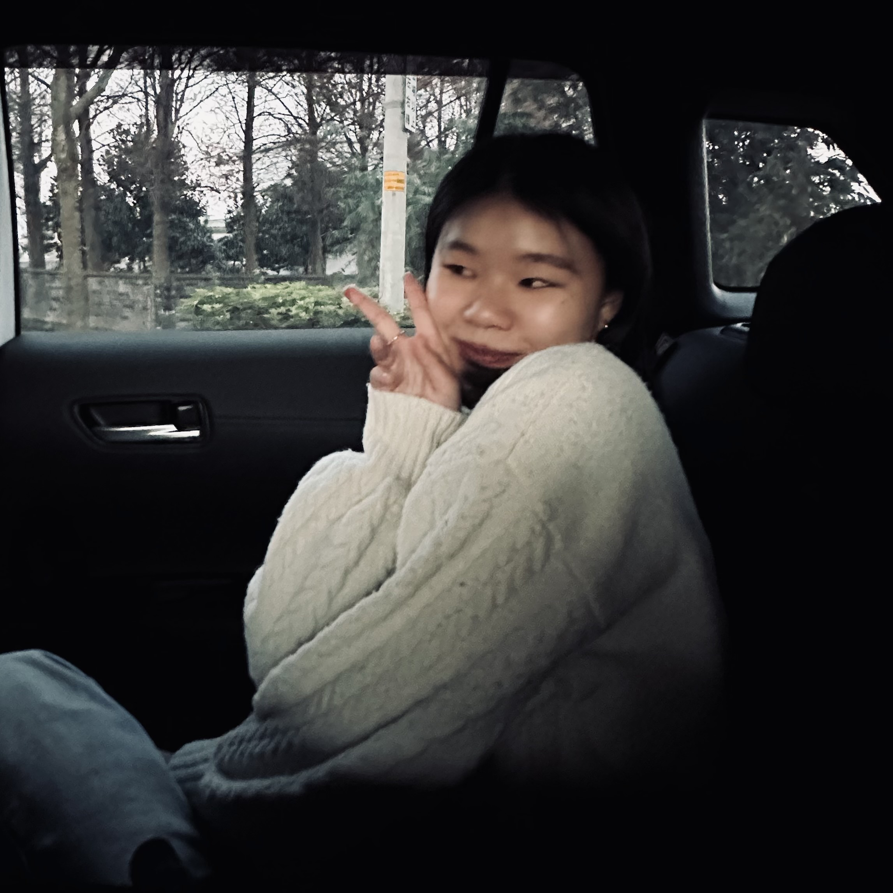
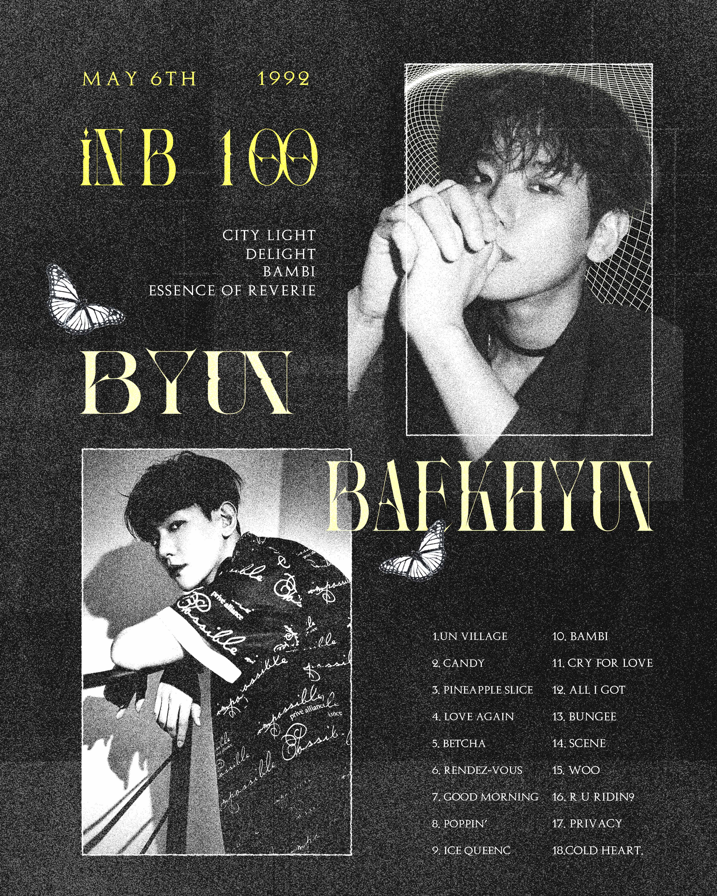
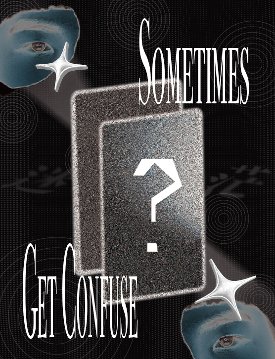
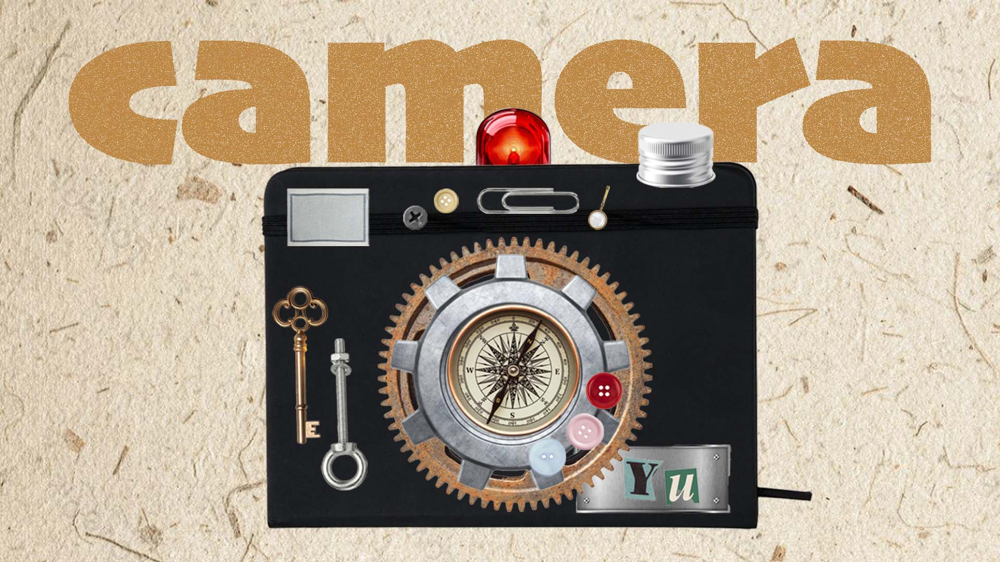
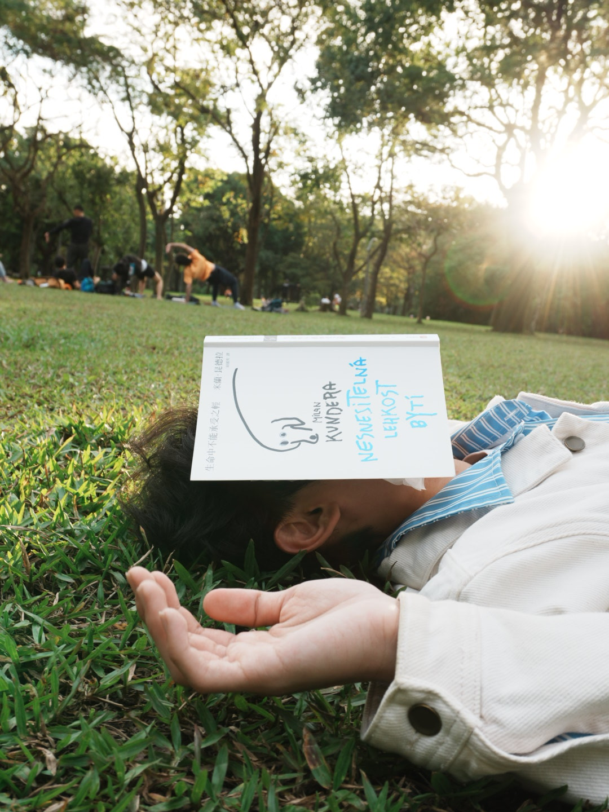
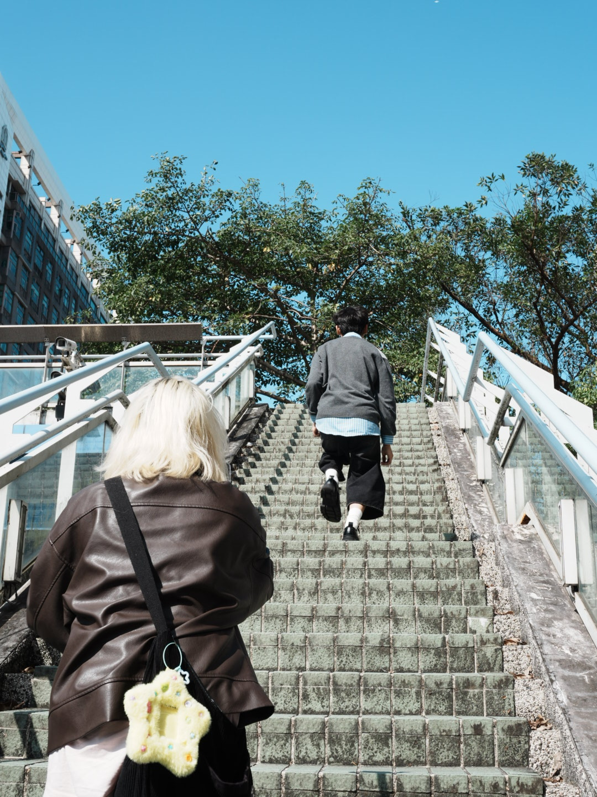
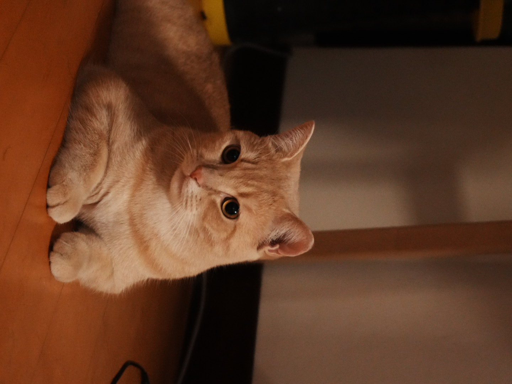
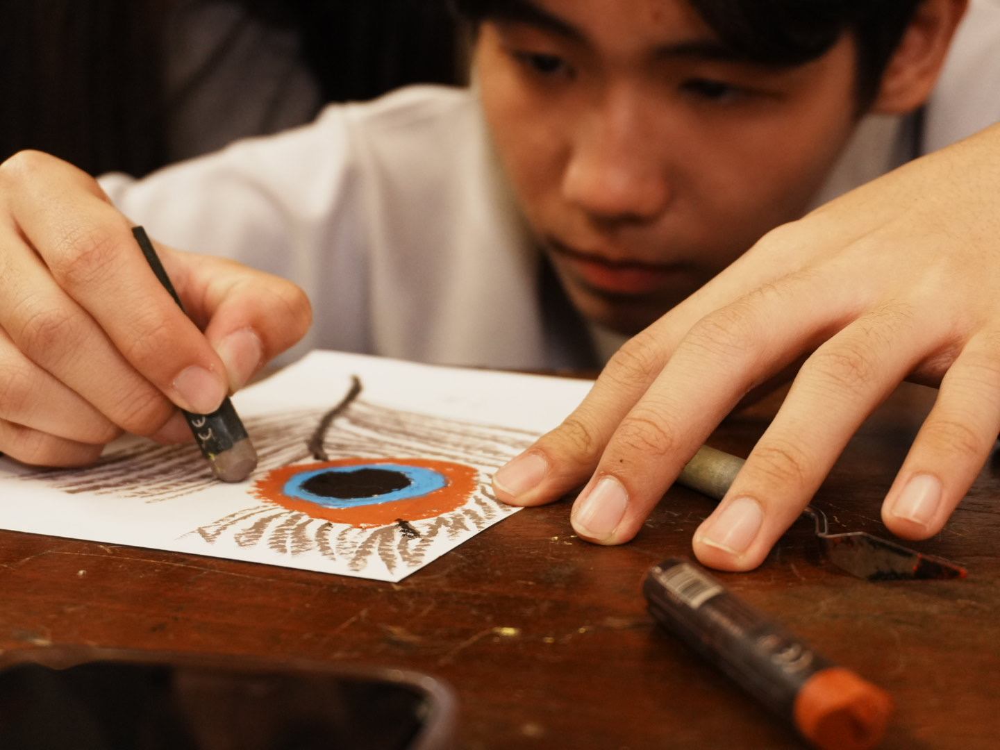
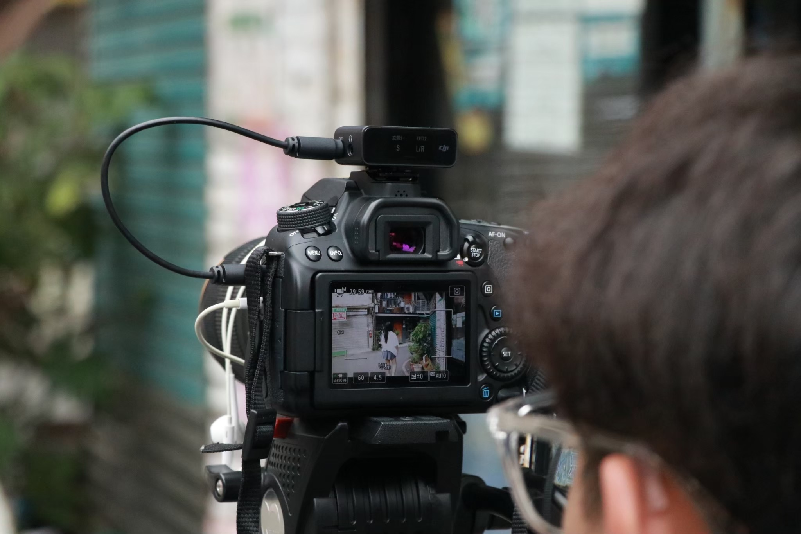
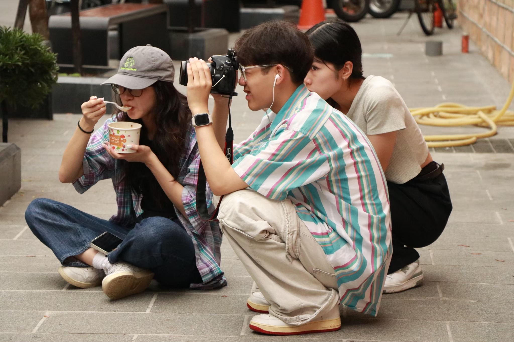

孫于晴 SUN YU QING
✉️ yyuqing0915@gmail.com
📞 0978-416-139
我目前就讀世新大學資訊傳播三年級，擅長觀察社群趨勢，並具備影音製作及獨立經營社群帳號的經驗。曾產出單支 8.5 萬次觀看 的 Reels 與 19萬次瀏覽 的 Threads 貼文。我也擅長使用剪輯軟體進行影音製作，並能獨立完成圖片製作與社群文案，另外我具備活動規劃能力，擅長構思活動架構並追求細節。
學習經驗
1. 傳播技能展 - 後製組組長
負責管理進度及影片粗剪，熟練運用 Premiere Pro 掌握影片敘事節奏。
2. 直播節目製作 / 精華剪輯
協助節目企劃並剪輯直播精華，單支影片累計觀看近 3,000 人次。
3. MV 後製 / 側拍紀錄
負責素材整理與初步剪輯，並擔任側拍紀錄拍攝現場的幕後花絮。
4. 全運會競技體操攝影
擔任現場轉播攝影，快速捕捉運動員完成高難度動作的瞬間。
專業技能
Premiere Pro
Photoshop
Illustrator
Figma
作品集
影音作品
平面作品




專案企劃
PLANNING LG MoodMate_行銷提案
PLANNING 光影之舟 _ 展覽企劃書
PLANNING Haru _ 產品需求文件
PLANNING Over The Bridge＿數位內容策展
側拍作品





